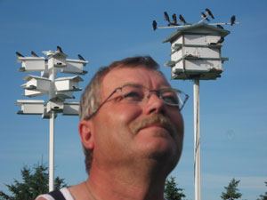

Welcome to NorthernSkys.com
Farmer and bird enthusiast Bob Buskas designs bird houses for Purple Martins. This website contains everything Purple Martin related.
When I first started trying to attract PM's to my home, the numbers in Alberta were very low. The only active colony was 10 miles away, but I stayed persistent and it paid off, it took 5 years before I got my first successful nesting pair. I named that Sub adult (SY) Male Mr. T, he is my colony founder, he arrived on June 2, 1996, at 11.30 am. Which just happens to be my birthday. He checked out the house, stayed for about ½ hour then left. The following day he returned with a girl friend, and my colony began. MR. T returned to compartment # 11 in my T14 house for 7 consecutive years and built a wonderful colony. God rest his soul. He was the first to arrive each spring, he was a very calm and friendly bird, as he and I had many good conversations. Believe me I'm not crazy, they really do talk back to you, just ask my wife. One of the most interesting things I have learned about Martins is that they are a lot like humans, they each have their own personality and habits, so it is fairly easy to tell them apart.
There are 4 major things that you must have, to house a successful Purple Martin Colony in Alberta. The first thing is to be located in an area that is within 1 or 2 miles of water, or have an open grain field or pasture that is rich with bugs near the colony site. Here in the Parkland region of central Alberta, nearly all areas are adequate, including all towns and cities. The second, is to have good manageable housing, that can be lowered down at any time during the nesting season, with easy access to all compartments. After a cold rainy spell, which we often get, you want to be able to check the nests easily with minimal disturbance, to make sure there are no dead nestlings left in the compartments. Martins are not able to feed their young when the temperature falls below 10 degrees Celsius, so after a prolonged cold rainy period, there can be losses. Losses are usually higher with the younger Sub adult parents, which have little experience with raising young, as this is their first try. This far north, the housing should be made of wood, aluminum houses work very well further south in the USA. where it is much warmer. A friend of mine has had a colony for over 35 years, he offers a wooden house and a good quality aluminum house, only on a few occasions has the aluminum house been occupied, and only after the wooden house is completely full. He agrees with me that the aluminum is just to cold, and the Martins prefer wood for the insulation value. The third, is locating your housing properly in your yard. It is very important to locate the houses in the most open area as possible, the further away from trees the better. Martins need plenty of flying space near the housing, as well, the more it is in the open, the safer the Martins are from predators such as Hawks, Owls and Merlins. The Martins know this, so if your housing is not placed correctly, your chances of starting a colony are very slim. Fourth, and also very, very important, is keeping your housing free from all other species of cavity nesting birds. If any other species, Starling, House Sparrow, Tree Swallow, or even a Blue bird, claims it's territory or builds a nest in the Martin house, you will have almost no chance of starting a Purple Martin colony. When the Martins, show up and want to investigate the house, these other species will defend their territory very aggressively, and drive the Martins away. I hope by telling you this, that you do not get discouraged, because once you have a colony established, it gets much easier, as the older ASY males will then become far more aggressive, and they often will gang up on these other species and drive them off them selves. BE PATIENT! SY Male SY Female ASY Female ASY Female SY Male SY Male ASY Male ASY Male HY = Hatching Year (first year at colony) SY = Second Year at colony (sub adults) ASY = After Second Year (adult birds) ** Click on picture to view larger ** ASY Female, SY Male, and ASY Male Photos courtesy of Chuck Abare SY Female Photo courtesy of Ron Vasser ASY females get darker as they get older. The ASY female shown here is fairly light in color, which tells me that she is probably only 2 or 3 years old. Also ASY females have a purplish tone on their backs. SY females are a brown color with no purple on their backs. The spring migration of Purple Martins is drawn out over about 6 to 8 weeks. Older adult (ASY) Martins begin arriving in Alberta by late April and early May, with the majority usually arriving around Mothers Day. These older birds are returning to their natal colony sites and generally will not nest at new sites. The younger first year adults (ASY) usually arrive by the May long weekend, followed by the Sub adult (SY) birds that begin arriving in late May and early June.If you are starting a new colony site, and there are no active colony's within several miles of your site, I would advise not to open your housing until the May long weekend. However, if there is an active colony nearby you may want to open your houses a bit earlier. (Mothers day weekend) as you may be able to steal one or two of these older birds from another colony, if your location and housing is superior and totally free of Starlings & Sparrows. The prime time for attracting Martins to a new colony site in western Canada is from late May through to mid June. You have until the very end of June to attract a successful nesting pair. It is also very important to pre-build the nests for them. Pre-Built Nest Click on picture for larger version Martins love prebuilt nests, especially the young SY birds, they arrive later in the season, they are rookies at nest building and are also hard pressed for time. So a prebuilt nest is very inviting to them. You can greatly increase your chances of getting them to stay and nest at your site with a prebuilt nest.I find that using a Styrofoam sub floor about 1/2" to 1" thick helps to keep the nestlings warm, and also supplies good traction for their feet avoiding leg splaying when they grow. I use the dense Styrofoam (blue or pink). The females often will scratch out their own nest bowl in it themselves, they love it! Place a 1/2" to 1" thick Styrofoam on the compartment floor (or nest tray floor behind the perch). Then paint the Styrofoam as well as all the sides of the compartment with mud. This makes the compartment nice and dark and natural, just what they love. Then add a small handful of stubble straw cut into 3 inch lengths to the nesting area, it also don't hurt to add a few green leaves to the nest as seen in the picture. The nest is now ready and the martins will find it very hard to resist. For those of you trying to start a new colony, these prebuilt nests will greatly increase your chances. The Styrofoam will have to be replaced as necessary as it will wear down over time but that's OK. My Martins love the warm soft Styrofoam. I would advise you to purchase a dawn song tape or CD and play it in the early morning hours in May and June. Using a Purple Martin chatter tape or CD in July and August will help hold them at your site as well. Many of you may laugh at this, but the Dawn Song tape is what brought Mr T to my colony site. Most all birds sing some sort of a dawn song, when you wake up early in the Morning and hear the Robins singing in the spring, they are singing their dawn song to advertise the nesting site they have chosen, to a potential mate. The mature ASY male Purple Martins in an established colony, fly high over the colony site singing their dawn song in the pre-dawn hours, when the sound travels the furthest. They are advertising the site to newly arriving Martins in the area. The Dawn Song tape is a recording of this song, and it will attract any Martin that hears it. Believe me it does work. Sometimes, the Sub Adult (SY) Martins, (last years young), will show up at new colony sites in June, and nest successfully. Others will just play nest for their first nesting season. They are the Teenagers of the Purple Martin world. So enjoy them for a few weeks, and make them feel at home, because next year they will return as adults (ASY's), and if they liked your housing, they probably will return to your site, and nest successfully in their second season. I hope some of these tips will help you, in getting a Purple Martin Colony started in your back yard. The colony soon becomes a great source of entertainment, there is always something to watch. I find them to be a major stress relief for me after a long days work. If you have any questions, please feel free to contact me using the information given below or via email at bobbuskas@incentre.net, and hopefully you can take a drive out to my Northern Sky's colony, here on the farm, located 1 Km south of Secondary Hwy 611 on Range Road 230, Southeast of Wetaskiwin, Alberta. I enjoy visitors coming to take a look at the colony, and talking about this wonderful hobby. So stop in sometime, for a coffee or an ice tea! Sincerely..... Bob Buskas